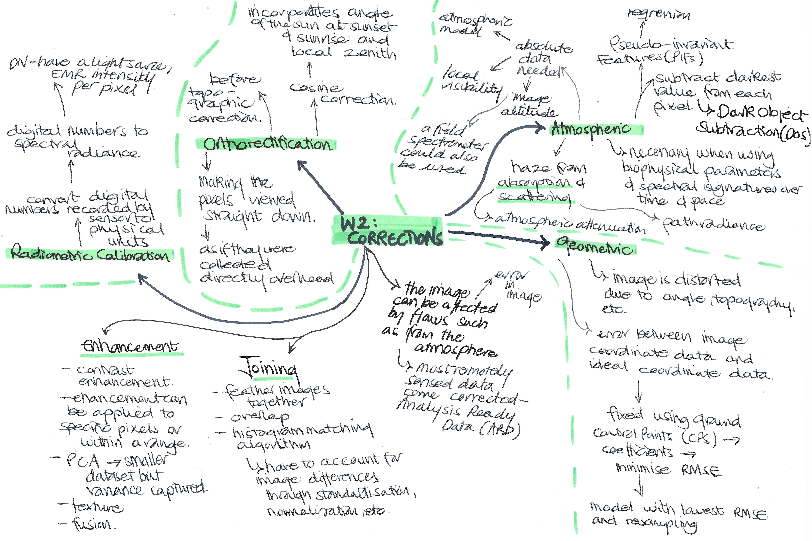
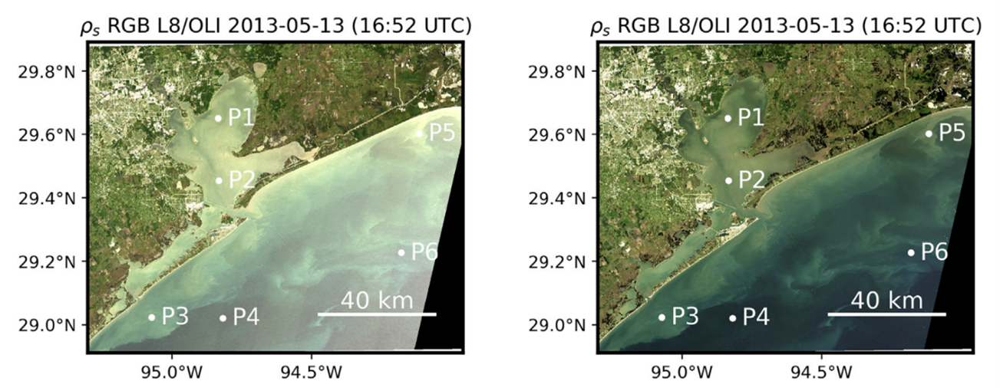

3 Week 3 - Corrections
3.1 Summary
The summary of this week’s content is presented below in the mind map (I realised in the middle it says week 2 instead of 3 - my mistake!).
Something I wanted to add onto this mind map for the summary is the difference between radiance and reflectance. Reflectance is the property of a material, and the proportion of radiation hitting a surface to the radiation reflecting off of it. Radiance is how much light the instrument measures and depends on illumination, the orientation and position of what is being observed and the light’s path.
3.2 Applications
The practical content addressed corrections using raw satellite imagery, merging images together and enhancements. This application section will focus on studies which have made use of atmospheric corrections, as I found this type of correction really fascinating! I noticed that many papers mentioning atmospheric correction in their titles focused on ocean or water imagery. For example, Vanhellemont developed a dark spectrum fitting (DSF) correction model to estimate path reflectance in order to remove the effects of sun glinting (2019). This paper contributed to correction models to improve the quality of water imagery.

Atmospheric correction is of particular importance in the ocean colour (OC) area of remote sensing, which is used to provide information on factors such as the abundance of chlorophyll as an indicator for plankton, seawater depth and seafloor reflectance (Ilori, et al., 2019).
From understanding more about applications of atmospheric corrections in remote sensing, it is clear that a big challenge is to be able to make the corrections applicable to a time series and across different sensors and geographies – the same could be assumed for the other types of correction as well.
3.3 Reflection
I have to admit – this lecture was quite difficult for me to get my head around! Remote sensing imagery is more complex than I realised, however it is interesting to understand more about how the images can be manipulated to demonstrate particular things and how they can be improved to maximise their accuracy and potential. It is clear however, that there are so many ways the images can be enhanced, corrected or adjusted, that these changes must be carried out with a specific goal in mind. From the lecture and practical content found DOS correction particularly interesting - I think it is a clever and straightforward way to account for atmospheric corrections.
I think understanding the theory behind correction is useful, however I am uncertain if it is important to understand the specific details and science behind each type as a lot of the data comes already corrected. That being said, I think it is valuable in data science and research to not accept data as it comes and just analyse it – it is important to think about how the data was created or adjusted before it is used. It’s definitely something I will consider more in the future, whether using remotely sensed data or other types of data.
3.4 References
Ilori, C., Pahlevan, N. and Knudby, A. (2019) ‘Analyzing Performances of Different Atmospheric Correction Techniques for Landsat 8: Application for Coastal Remote Sensing’, Remote Sensing, 11, 4
Vanhellemont, Q. (2019) ‘Adaptation of the dark spectrum fitting atmospheric correction for aquatic applications of the Landsat and Sentinel-2 archives’, Remote Sensing of Environment, 225, pp. 175-192